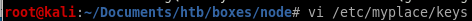
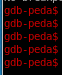
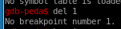
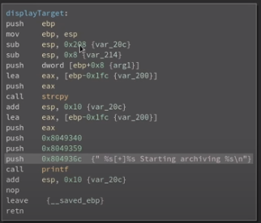

Index
- nmap
- http
- initial foothold on mark
- privesc to Tom
- linEnum.sh
- escalation method 1: mongo_db rev shell
- escalating method 2: copy privileged shell (ippsec)
- privesc to root
- find / -perm -4000 2>/dev/null
- /usr/local/bin/backup
- badchars
- intended privesc- Buffer Overflow
- check for overflowed buffer
- pattern create
- python -c 'print "A"*520'
- buf.py
- find libc, system_off, exit_off and arg_off starting address
- update ret
- run buf.py win
- unintended privesc methods
- user/root
- lessons learned
intended privesc- Buffer Overflow
to be added when I know wtf im doingokay a few hours later and I'm feeling at least confident enough to follow ippsec's walkthrough, fyi my butt is fully clenched
lets fire up gdb (btw install PEDA - Python Exploit Development Assistance for GDB first through this link
https://github.com/longld/peda )
NOTE: you need to create the a file in /etc/myplace/keys with one of the 3 backup keys in order for ./backup to run propely on the attacking machine because it uses that directory in the source code, and you need to be able to run ./backup on your attacking machine in order to pull the overflow off through GDB
(lets swap our local key file to have a short string like ‘abc’



first order of business is to check which compile-time protections are enabled:
checksec

lets delete any breakpoints
...none were placed but its good to check
and put a breakpoint on main:
looking at binary ninja, we find strcopy, which is an outdated function and should actually be strncopy
we'll pick a function that calls strcopy to target

there's a function right before it so lets run our backup script twice to see if it will display what we're archiving and prove it overflows